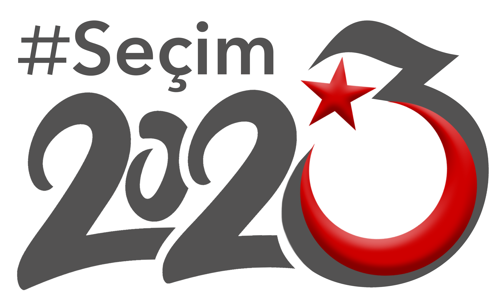

Welcome to VRL Lab!
We work hard,
dream big, and
enjoy life
while developing techniques to analyze online behaviors to improve individual well-being and address societal problems. We leverage online and offline data to gain insight into human behaviors and analyze technological systems to mitigate threats against online conversations by developing techniques in machine learning, network science, and computational social sciences.
The VRL Lab is led by Onur Varol, an assistant professor at the Sabanci University Computer Science Program, with an affiliation with the Center of Excellence in Data Analytics. We named our lab as "viral" because we aim to breach disciplinary boundaries and make novel connections between them.
Follow us on
LinkedIn and
Instagram
Lab news
-
Our new EU HORIZON Project ECLIPSE started in September 2025. See details on project page.
-
Our project "Modeling the Motivation for Following Political Leaders on Social Networks and Agenda-Setting Strategies Using Computational Social Science Methods" funded by TUBITAK 1001 program. Visit project page for details.
-
We successfully completed TUBITAK 2247-D National Leader Researcher Grant titled "Developing systems for coordination and automated behavior detection on online social networks". Watch our video describing our accomplishments in this project.
-
We released a platform, called
Secim2023.biz, to share data science insights and reports from our disinformation and coordinated activity detection project on upcoming 2023 Turkish Presidential Election.
